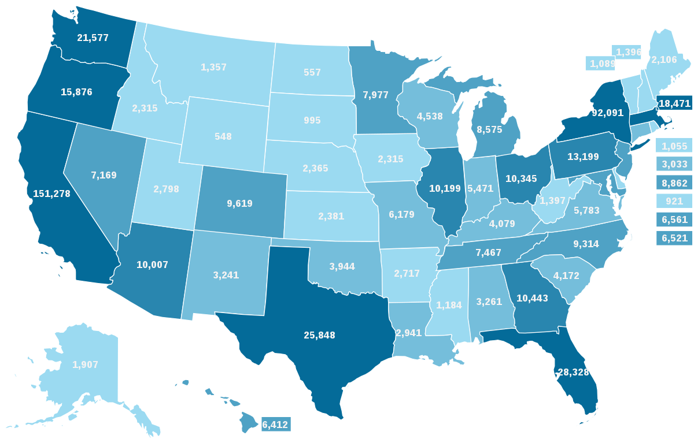

According to PubMed, 10-15% of Homeless People Engage in Drug Abuse While 30-40% Engage in Alcohol Abuse
Published 9/25/2022 by HTH group.
By: Raviar Sulaiman and Ernest Caranto.

To help the homeless overcome addiction, starting with stable housing is the first step. Permanent supportive housing integrates affordable housing with voluntary services to bring up the needs of chronically homeless people. The concept is intended to build independent living connecting people within the community with treatment and job services.